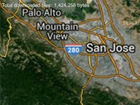

Example of how to track the size of downloaded tiles.
Usage instructions:
Add this script to map GameObject.
The size of downloaded tiles will be shown on the screen.
Add this script to map GameObject.
The size of downloaded tiles will be shown on the screen.
ControlDataTrafficExample.cs
/* INFINITY CODE 2013-2016 */
/* http://www.infinity-code.com */
using UnityEngine;
namespace InfinityCode.OnlineMapsExamples
{
[AddComponentMenu("Infinity Code/Online Maps/Examples (API Usage)/ControlDataTrafficExample")]
public class ControlDataTrafficExample : MonoBehaviour
{
/// <summary>
/// Counter of downloaded data.
/// </summary>
private int totalTileTraffic;
private void OnGUI()
{
// Showing the counter of downloaded data.
GUI.Label(new Rect(5, 5, Screen.width - 10, 30),
"Total downloaded tiles: " + totalTileTraffic.ToString("N0") + " bytes");
}
private void Start()
{
// Subscribe to the event of success download tile.
OnlineMapsTile.OnTileDownloaded += OnTileDownloaded;
}
/// <summary>
/// This method is called when tile is success downloaded.
/// </summary>
/// <param name="tile">Reference to tile.</param>
private void OnTileDownloaded(OnlineMapsTile tile)
{
// Increases counter of downloaded data.
totalTileTraffic += tile.www.bytesDownloaded;
}
}
}